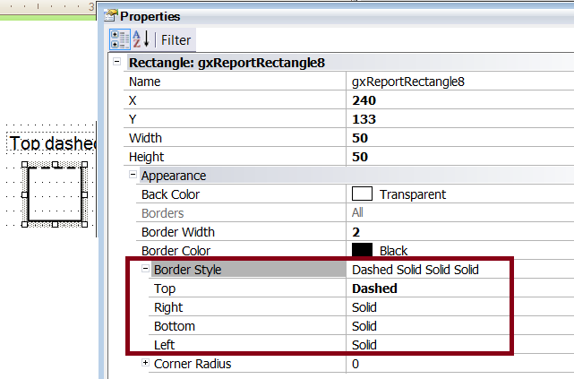

The Border Style property is available for Rectangles in the layout of PDF Reports. It allows setting the style of the four edges of the rectangle, as seen in the figure below:  AvailabilityThis property is available since GeneXus X Evolution 3 Upgrade 5. See Also
|
| Backlinks |
| Corner Radius property |